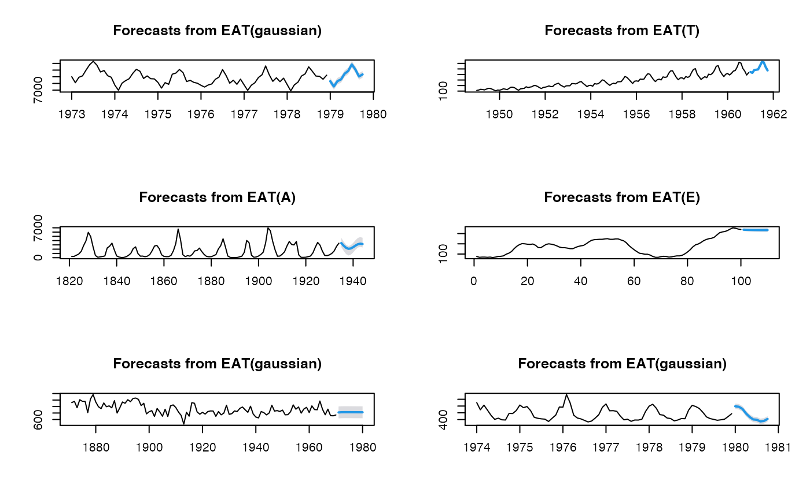

Combined ets, arima, and theta (eat) forecasting (uses forecast::ets,
forecast::auto.arima, forecast::thetaf)
eatf( y, h = 5, level = 95, method = c("EAT", "E", "A", "T"), weights = rep(1/3, 3), type_pi = c("gaussian", "E", "A", "T"), ... )
Arguments
| y | a univariate time series |
|---|---|
| h | number of periods for forecasting |
| level | confidence level for prediction intervals |
| method | forecasting method: "E" for |
| weights | weights for each method, in method |
| type_pi | type of prediction interval: currently ETS: "E", Auto.Arima: "A" or Theta: "T" |
| ... | additional parameters to be passed to |
Value
An object of class "forecast"; a list containing the following elements:
A list containing information about the fitted model
The name of the forecasting method as a character string
Point forecasts for the time series
Lower bound for prediction interval
Upper bound for prediction interval
The original time series
Residuals from the fitted model
Details
ensemble forecasts obtained from forecast::ets,
forecast::auto.arima and forecast::theta (with weights)
References
Hyndman R, Athanasopoulos G, Bergmeir C, Caceres G, Chhay L,
O'Hara-Wild M, Petropoulos F, Razbash S, Wang E, Yasmeen F (2021).
forecast: Forecasting functions for time series and linear models. R
package version 8.14, <URL: https://pkg.robjhyndman.com/forecast/>.
Hyndman RJ, Khandakar Y (2008). 'Automatic time series forecasting: the forecast package for R.' Journal of Statistical Software, 26 (3), 1-22. <URL: https://www.jstatsoft.org/article/view/v027i03>.
Assimakopoulos, V. and Nikolopoulos, K. (2000). The theta model: a decomposition approach to forecasting. International Journal of Forecasting 16, 521-530.
Hyndman, R.J., and Billah, B. (2003) Unmasking the Theta method. International J. Forecasting, 19, 287-290.
Author
T. Moudiki
Examples
#> Point Forecast Lo 95 Hi 95 #> 101 219.3380 211.3794 227.2966 #> 102 218.8270 210.8684 226.7857 #> 103 218.4393 210.4807 226.3979 #> 104 218.1519 210.1933 226.1105 #> 105 217.9463 209.9877 225.9049#> Point Forecast Lo 95 Hi 95 #> 101 219.1855 212.2086 226.1624 #> 102 218.6022 211.6253 225.5790 #> 103 218.1858 211.2089 225.1627 #> 104 217.8916 210.9147 224.8684 #> 105 217.6877 210.7109 224.6646obj <- ahead::eatf(WWWusage, method = "EAT", weights = c(0, 0.5, 0.5), h=10, type_pi = "T") plot(obj)par(mfrow=c(3, 2)) plot(ahead::eatf(USAccDeaths, h=10, level=95)) plot(ahead::eatf(AirPassengers, h=10, level=95, type_pi = "T")) plot(ahead::eatf(lynx, h=10, level=95, type_pi = "A")) plot(ahead::eatf(WWWusage, h=10, level=95, type_pi = "E")) plot(ahead::eatf(Nile, h=10, level=95)) plot(ahead::eatf(fdeaths, h=10, level=95))